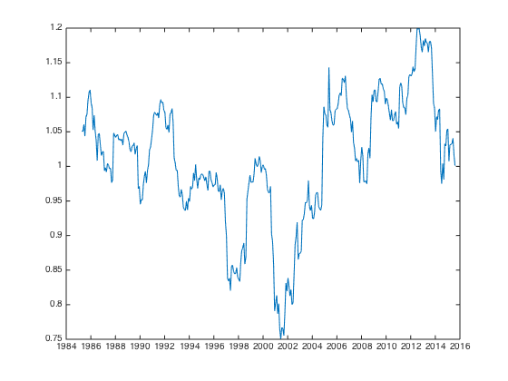
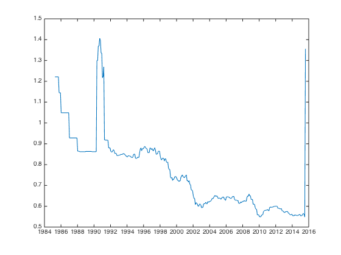
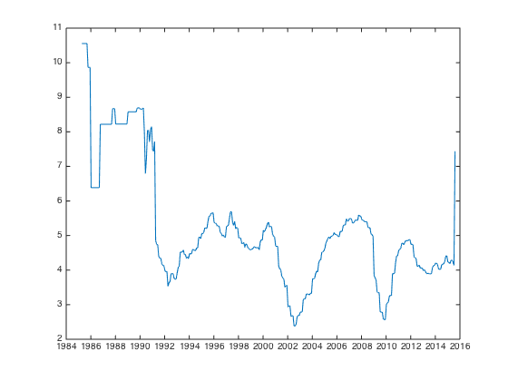
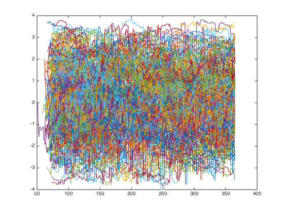
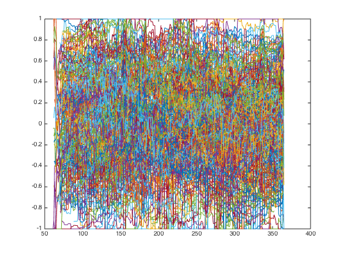
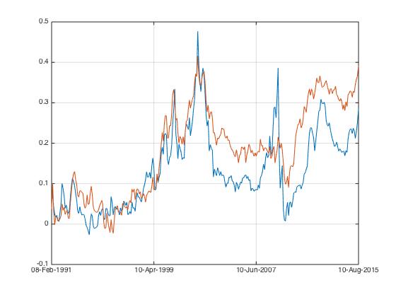
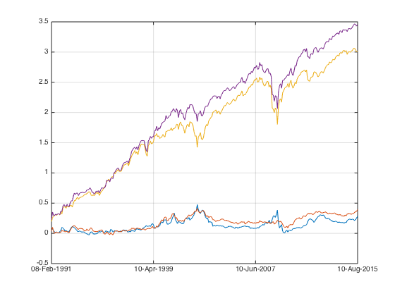

Multiple Factors - Load Data
with what I build for simple MOM factor, I will now move on to other famous factors. I repeat the same procedure and then investigate the combined factor.
Contents
- MOM (12-1 month return)
- HML (PB)
- BAB (Beta)
- LMS (Market Capitalization)
- QUAL ?Leverage(D/E), Gross Margin, Turnover, Roa)
- Alternatives (Low vol, Leverage(A/E),PE, Profit Margin, Roe, etc., etc. )
Procedures.
I will repeat what I went through for MOM, and focus on 1300 US dataset.
- Check data quality, and clean it up.
- Construct factor portfolio, and check the performance wrt to equal weighted benchmark, with respect to N.
- Perform the Percentile analysis and identify where signal presents.
- Perform the walkforward test
- Perform sector neutral analysis
- Perform large dataset analysis
Let's load the data from ..
load('../data_equity_list_us.mat'); load('../data_field_list.mat'); load('../data_historical_data_us.mat');
Load Data
take data sample, load data & the list
index = datasample(1:1300,1000,'Replace',false);
px = fun_load_price(history_us, equity_list_us, index);
px = fun_clean_data(px);
list = equity_list_us(index,:);
load/generate the observation
pb_ts = fun_load_observations(history_us, equity_list_us, index,'pb'); beta_ts = fun_load_observations(history_us, equity_list_us, index,'beta'); cap_ts = fun_load_observations(history_us, equity_list_us, index,'cap'); grossmargin_ts = fun_load_observations(history_us, equity_list_us, index,'gm'); turnover_ts = fun_load_observations(history_us, equity_list_us, index,'turnover'); roa_ts = fun_load_observations(history_us, equity_list_us, index,'roa'); leverage_ts = fun_load_observations(history_us, equity_list_us, index,'leverage');
let's take a look at some of the data
PB ratio
plot(pb_ts.dates,nanmedian(fts2mat(pb_ts),2));
datetick('x');
snapnow;

risk is high in current market...
Beta
plot(beta_ts.dates,nanmedian(fts2mat(beta_ts),2));
datetick('x');
snapnow;
 Gross Margin
plot(grossmargin_ts.dates,nanmedian(fts2mat(grossmargin_ts),2));
datetick('x');
snapnow;
there is some seasonality here, I can see the economic cycle as well.
Turnover
plot(turnover_ts.dates,nanmedian(fts2mat(turnover_ts),2));
datetick('x');
snapnow;
 ROA is strongly affected by economic cycles.
plot(roa_ts.dates,nanmedian(fts2mat(roa_ts),2));
datetick('x');
snapnow;
 Leverage
plot(leverage_ts.dates,nanmedian(fts2mat(leverage_ts),2));
datetick('x');
snapnow;
I loaded the correct time series. ; P
Generate scores
Notice the sign I put before score_leverage_ts.
score_leverage_ts = -fun_calculate_score(leverage_ts,list,'sectorsort',px); score_roa_ts = fun_calculate_score(roa_ts,list,'sectorsort',px); score_grossmargin_ts = fun_calculate_score(grossmargin_ts,list,'sectorsort',px); score_turnover_ts = fun_calculate_score(turnover_ts,list,'sectorsort',px); score_quality_ts = score_leverage_ts+score_roa_ts+score_grossmargin_ts+score_turnover_ts; plot(fts2mat(score_quality_ts)); snapnow; score_quality_ts = fun_combine_score(score_quality_ts); plot(fts2mat(score_quality_ts)); snapnow; 
in this way, score_quality_ts is only not NAN when all constituent score are available. Alternatively, I can also fillts first, then combine the scores.
score_leverage_ts = fillts(score_leverage_ts,0); score_roa_ts = fillts(score_roa_ts,0); score_grossmargin_ts = fillts(score_grossmargin_ts,0); score_turnover_ts = fillts(score_turnover_ts,0);
score_quality_ts = -score_leverage_ts+score_roa_ts+score_grossmargin_ts+score_turnover_ts; score_quality_ts = fun_combine_score(score_quality_ts);
Let's take a first peak at the result. calculate portfolio weight
portfolio_weight_ts = fun_portfolio_weight_sector_neutral(score_quality_ts,'longshort'); portfolio_rt_ts = fun_portfolio_return(px, portfolio_weight_ts); portfolio_rt_ts = portfolio_rt_ts(70:end); plot(cumsum(portfolio_rt_ts)); legend('off'); hold on; snapnow; portfolio_weight_ts = fun_portfolio_weight_sector_neutral(score_quality_ts,'topm',0.4); portfolio_rt_ts = fun_portfolio_return(px, portfolio_weight_ts); portfolio_rt_ts = portfolio_rt_ts(70:end); plot(cumsum(portfolio_rt_ts)); legend('off'); hold on; snapnow; portfolio_weight_ts = fun_portfolio_weight_sector_neutral(score_quality_ts,'equalweight'); portfolio_rt_ts = fun_portfolio_return(px, portfolio_weight_ts); portfolio_rt_ts = portfolio_rt_ts(70:end); plot(cumsum(portfolio_rt_ts)); legend('off'); snapnow; sqrt(12)*sharpe(fts2mat(portfolio_rt_ts(50:end)),0) portfolio_weight_ts = fun_portfolio_weight_sector_neutral(score_quality_ts,'topmlongonly',0.4); portfolio_rt_ts = fun_portfolio_return(px, portfolio_weight_ts); portfolio_rt_ts = portfolio_rt_ts(70:end); plot(cumsum(portfolio_rt_ts)); legend('off'); snapnow; sqrt(12)*sharpe(fts2mat(portfolio_rt_ts(50:end)),0)

ans =
0.5750

ans =
0.6974
Quality behaved as expected, i.e. when crisis hits, high quality securities outperformed low quality security. But overall the drift has been close to zero for the whole 25 years period, maybe because I'm using the large cap securities (1300 largest) where quality isn't a differentiating factor?
zero drift doesn't mean quality is useless, by including quality factor into consideration, I can expect to reduce overall portfolio risk.